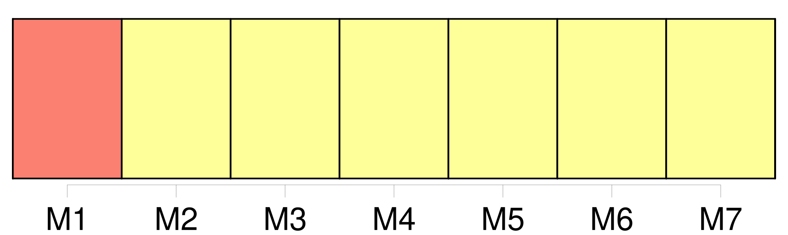
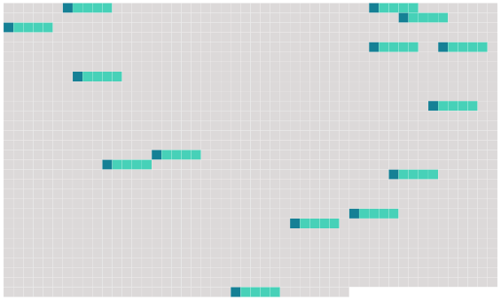

Longueur nb maillons : 14 mentions |
 |
Pour le transport de marchandises, [une lettre de transport aérien] est émise. [1 phrases] L'emploi de tout autre moyen constatant les indications relatives au transport à exécuter peut se substituer à l'émission de [la lettre de transport aérien] [1 phrases]
Article 5 [2 phrases]
Article 7
[La lettre de transport aérien] est établie par l'expéditeur en trois exemplaires originaux. [7 phrases]
Si, à la demande de l'expéditeur, le transporteur établit [la lettre de transport aérien] , ce dernier est considéré, jusqu'à preuve du contraire, comme agissant au nom de l'expéditeur. [3 phrases] L'expéditeur est responsable de l'exactitude des indications et déclarations concernant la marchandise inscrites par lui ou en son nom dans [la lettre de transport aérien] , ainsi que de celles fournies et faites par lui ou en son nom au transporteur en vue d'être insérées dans le récépissé de marchandises ou pour insertion dans les données enregistrées par les autres moyens prévus au paragraphe 2 de l'article 4. [6 phrases]
[La lettre de transport aérien] et le récépissé de marchandises font foi, jusqu'à preuve du contraire, de la conclusion du contrat, de la réception de la marchandise et des conditions du transport qui y figurent. [1 phrases]
Les énonciations de [la lettre de transport aérien] et du récépissé de marchandises, relatives au poids, aux dimensions et à l'emballage de la marchandise ainsi qu'au nombre des colis, font foi jusqu'à preuve du contraire ; celles relatives à la quantité, au volume et à l'état de la marchandise ne font preuve contre le transporteur que si la vérification en a été faite par lui en présence de l'expéditeur, et constatée sur [la lettre de transport aérien] , ou s'il s'agit d'énonciations relatives à l'état apparent de la marchandise. [5 phrases]
Si le transporteur exécute les instructions de disposition de l'expéditeur, sans exiger la production de l'exemplaire de [la lettre de transport aérien] ou du récépissé de la marchandise délivré à celui -ci, il sera responsable, sauf son recours contre l'expéditeur, du préjudice qui pourra être causé par ce fait à celui qui est régulièrement en possession de [la lettre de transport aérien] ou du récépissé de la marchandise. [13 phrases]
Toute clause dérogeant aux dispositions des articles 12, 13 et 14 doit être inscrite dans [la lettre de transport aérien] ou dans le récépissé de marchandises. |
 |
Il est possible de télécharger la ressource sur la page Ortolang |
Si vous avez des questions ou vous voyez des erreurs, merci d'envoyer un mail à silvia.federzoni89@gmail.com |